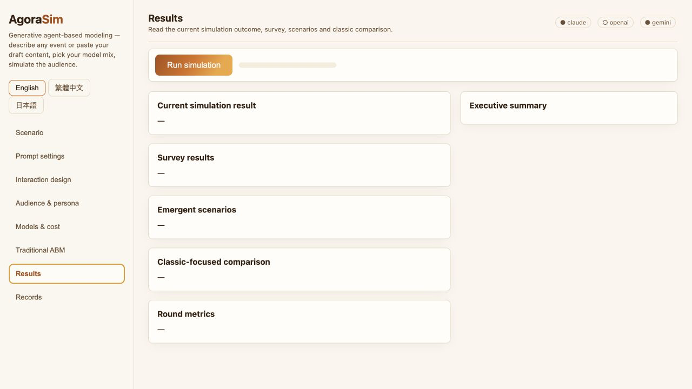
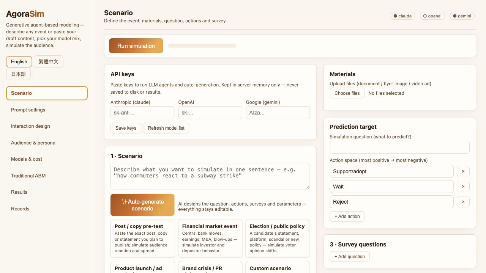
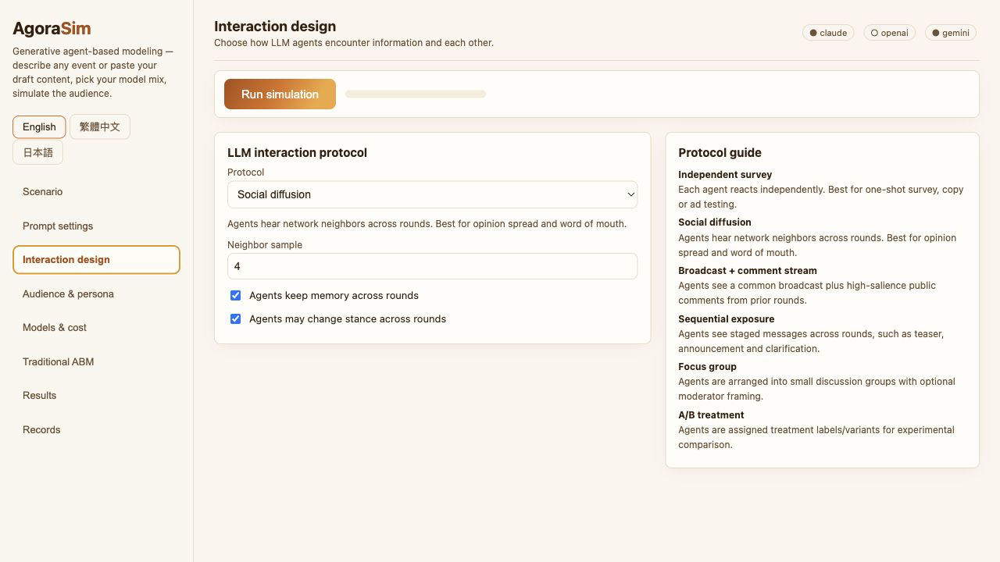
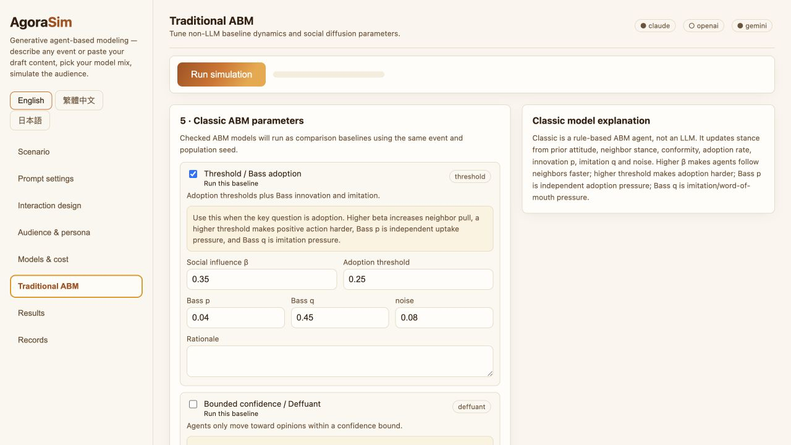

Inspect scenario trajectories under explicit modeling assumptions.
AgoraSim resolves natural-language or multimodal artifacts into editable ABM configurations, runs ratio-controlled populations of LLM, VLM, custom-endpoint, random and classical agents, and compares the same scenario against matched classical reference dynamics.

Inspect an illustrative browser-only trajectory.
This panel is intentionally static and local to your browser. It is a lightweight illustration of the workflow, not an accuracy evaluation or public-opinion prediction. Download the package when you want the real local UI, SDK/CLI, REST API, LLM/VLM calls and audit records.
Preview settings
For live model calls, upload media and download JSON records, use the local package.
Action distribution
A scenario workbench, hybrid engine and audit layer.
AgoraSim turns open-ended artifacts into explicit configurations whose assumptions can be inspected, edited, executed and compared across shared action spaces, metrics, records and reference dynamics.
Artifact to configuration
Briefs, drafts and media are resolved into editable event, population, action-space, survey, network, model-mix and comparison settings.
Hybrid execution substrate
LLM, VLM, custom-endpoint, random and classical agents share one structured decision interface and ratio-controlled model slots.
Reference dynamics and audit
Matched all-classical runs help interpret whether a trajectory resembles threshold, contagion, herding, learning or utility dynamics.

Resolve artifacts into editable configuration fields.

Make exposure assumptions visible and editable.

Compare against matched classical ABM trajectories.
Run the full system locally.
The package includes the local browser UI, FastAPI server, Python SDK/CLI, REST endpoints, example configurations, packaging scripts and documentation. Users bring their own model API keys for live LLM/VLM calls.
Local package
Recommended for reviewers, collaborators and students who want to inspect the full scenario workflow on their own machine.
Requires Python 3.10+. The first launch installs dependencies into a local `.venv` folder.
Keep the folder in a normal user-writable location such as Desktop or Documents.
macOS: `run_macos.command`. Windows: `run_windows.bat` or `run_windows.ps1`.
AgoraSim starts on `127.0.0.1:8000` or the next available local port.
Keys remain in memory and are not included in exported records.
Drop this folder into a lab project page.
This page is a static site. It can be hosted on GitHub Pages without a Python server, API keys or database.
Option A: repository Pages
Commit the `docs/` folder, then set GitHub Pages source to `main / docs`.
Option B: lab site subpage
Copy `docs/index.html`, `docs/assets/` and `docs/downloads/` into a project folder on the lab website.
Option C: iframe embed
Host this page once and embed it from the lab project page using an iframe or launch button.
Responsible-use note
AgoraSim is designed for exploratory scenario analysis, teaching, method comparison and baseline construction. Its synthetic trajectories should not be treated as measurements or predictions of real populations, and claims about precise subgroup reactions require empirical validation beyond the demo.